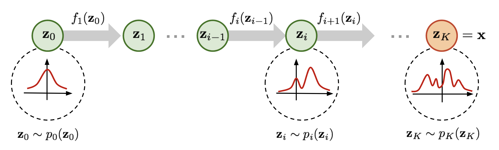
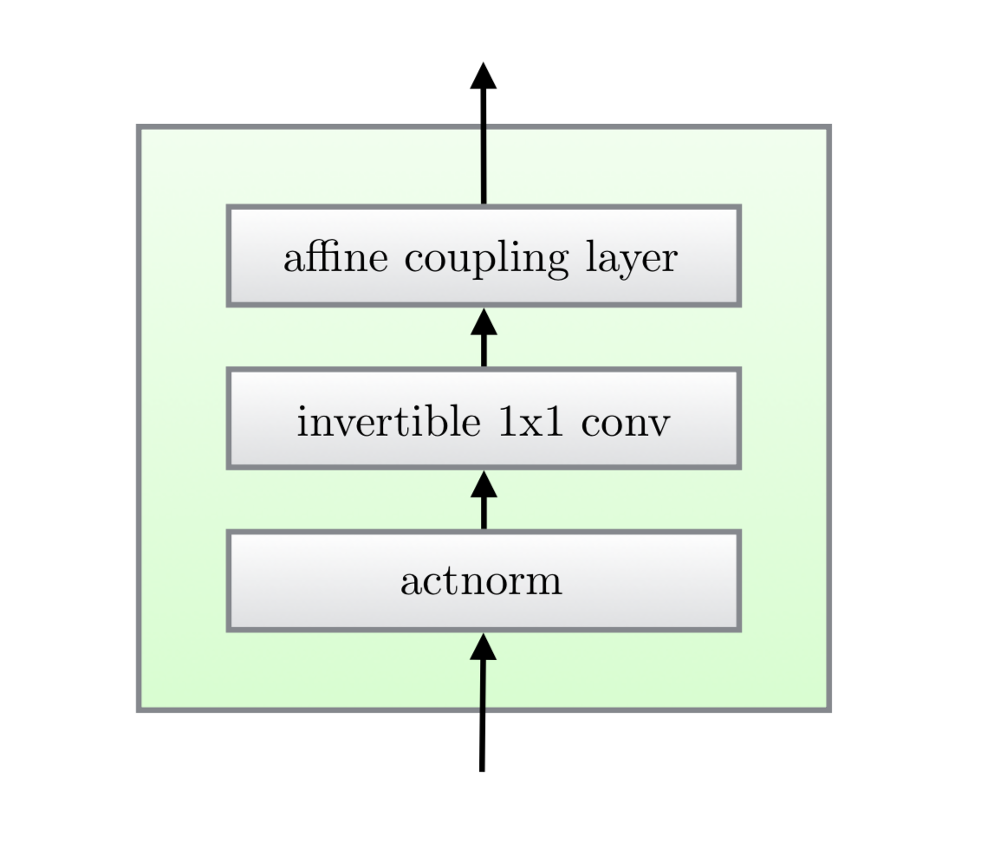
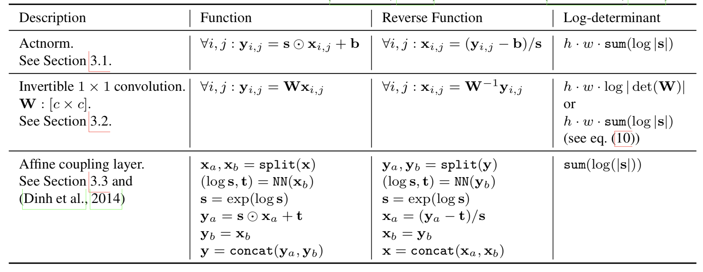
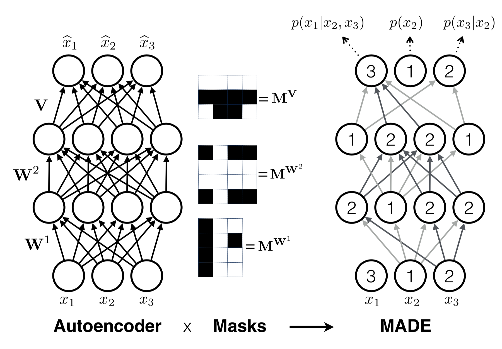
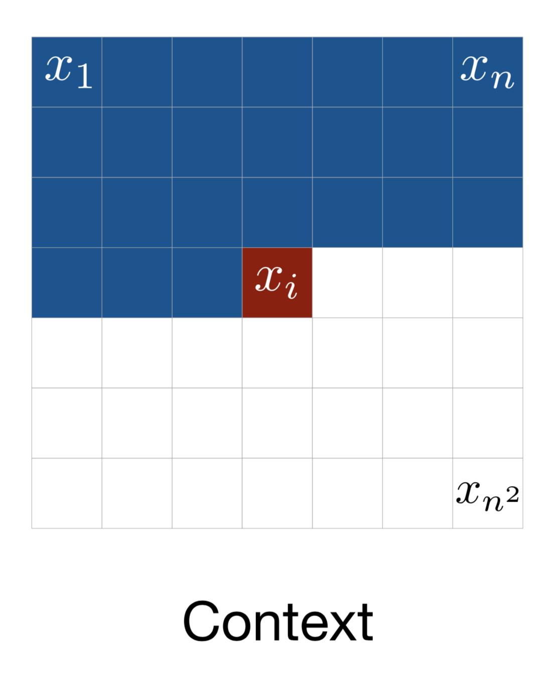
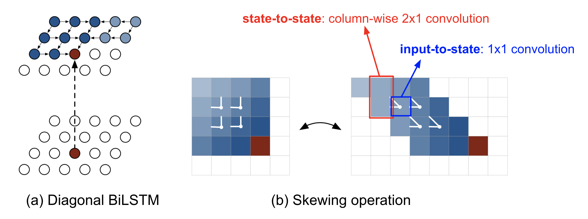
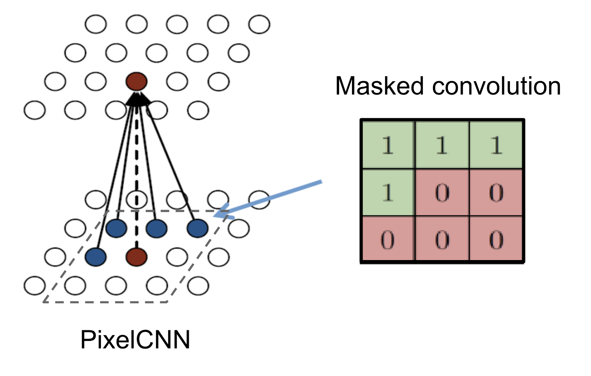
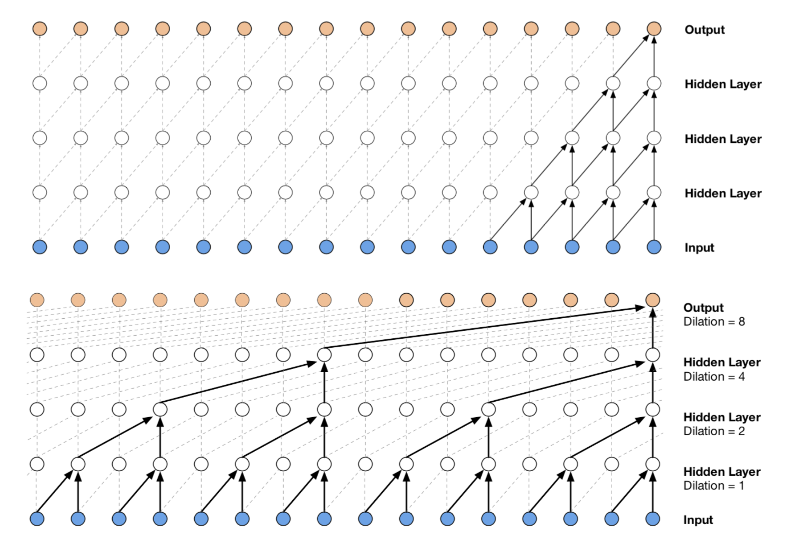
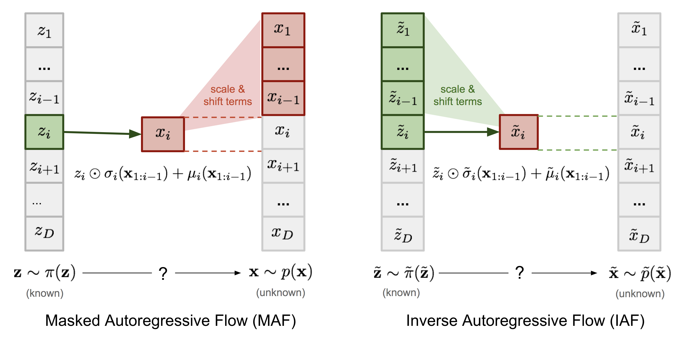

目录
目前我已经介绍了两种生成模型，从 GAN 到 WGAN 和 从自编码器到 Beta-VAE。它们都没有显式地学习真实数据的概率密度函数 p(\mathbf{x})（其中 \mathbf{x} \in \mathcal{D}）——因为这非常困难！以带有潜变量的生成模型为例，p(\mathbf{x}) = \int p(\mathbf{x}\vert\mathbf{z})p(\mathbf{z})d\mathbf{z} 几乎无法计算，因为遍历所有可能的潜码 \mathbf{z} 是不可行的。
基于流的深度生成模型借助 normalizing flows 这一强大的密度估计统计工具，解决了这个难题。对 p(\mathbf{x}) 的良好估计使得许多下游任务能够高效完成：采样未观测但逼真的新数据点（数据生成）、预测未来事件的稀有程度（密度估计）、推断潜变量、补全不完整的数据样本等。
生成模型的类型
以下是对 GAN、VAE 和基于流的生成模型之间差异的快速总结：

线性代数基础回顾
在深入基于流的生成模型之前，我们需要理解两个关键概念：Jacobian 行列式和变量变换规则。这些内容相当基础，可以放心跳过。
Jacobian 矩阵与行列式
给定一个将 n 维输入向量 \mathbf{x} 映射到 m 维输出向量 \mathbf{f}: \mathbb{R}^n \mapsto \mathbb{R}^m 的函数，其所有一阶偏导数组成的矩阵称为 Jacobian 矩阵 \mathbf{J}，其中第 i 行第 j 列的元素为 \mathbf{J}_{ij} = \frac{\partial f_i}{\partial x_j}。
行列式是由一个方阵所有元素计算得出的一个实数。注意行列式仅对方阵存在。行列式的绝对值可以看作“矩阵对空间进行放大或收缩程度的度量”。
n×n 矩阵 M 的行列式为：
其中求和下标 j_1 j_2 \dots j_n 是集合 {1, 2, …, n} 的所有排列，因此共有 n! 项；\tau(.) 表示排列的 奇偶性。
方阵 M 的行列式可判断其是否可逆：若 \det(M)=0，则 M 不可逆（奇异矩阵，其行或列线性相关，或某一行或列全为 0）；否则，若 \det(M)\neq 0，则 M 可逆。
矩阵乘积的行列式等于行列式的乘积：\det(AB) = \det(A)\det(B)。（证明）
变量变换定理
让我们在概率密度估计的背景下回顾变量变换定理，从单变量情况开始。
设有一个随机变量 z 及其已知的概率密度函数 z \sim \pi(z)，我们希望通过一个一一映射函数 x = f(z) 构造一个新的随机变量。由于 f 可逆，因此 z=f^{-1}(x)。现在的问题是如何推断新变量的未知概率密度函数 p(x)？
根据定义，积分 \int \pi(z)dz 是无数个宽度无穷小 \Delta z 的矩形面积之和。在位置 z 处矩形的高度就是密度函数 \pi(z) 的值。当我们进行变量替换时，z = f^{-1}(x) 得到 \frac{\Delta z}{\Delta x} = (f^{-1}(x))’ 和 \Delta z = (f^{-1}(x))’ \Delta x。这里 \vert(f^{-1}(x))’\vert 表示分别在两个不同变量坐标系 z 和 x 下定义的矩形面积之比。
多变量版本的形式类似：
其中 \det \frac{\partial f}{\partial\mathbf{z}} 是函数 f 的 Jacobian 行列式。多变量版本的完整证明超出了本文范围；感兴趣可自行搜索。
什么是 Normalizing Flows？
能够进行良好的密度估计在许多机器学习问题中都有直接应用，但这非常困难。例如，由于深度学习模型需要进行反向传播，嵌入的概率分布（即后验 p(\mathbf{z}\vert\mathbf{x})）需要足够简单，以便能够轻松高效地计算导数。这就是为什么潜变量生成模型中经常使用高斯分布，尽管现实世界中的大多数分布都比高斯复杂得多。
Normalizing Flow（NF）模型就是为了实现更好、更强大的分布逼近而出现的。Normalizing Flow 通过施加一系列可逆变换函数，将一个简单分布转换为复杂分布。通过一系列变换的链，我们根据变量变换定理反复替换变量，最终得到目标变量的概率分布。

如图 2 所定义，
接下来我们将方程转换为以 \mathbf{z}_i 为自变量的形式，以便使用基础分布进行推断。
(*) 关于“逆函数定理”的说明：若 y=f(x) 且 x=f^{-1}(y)，则有：
(*) 关于“可逆函数的 Jacobian”的说明：可逆矩阵的逆的行列式等于行列式的倒数：\det(M^{-1}) = (\det(M))^{-1}，因为 \det(M)\det(M^{-1}) = \det(M \cdot M^{-1}) = \det(I) = 1。
给定这样一串概率密度函数，我们知道每对相邻变量之间的关系。我们可以逐步展开输出 \mathbf{x} 的方程，直到回溯到初始分布 \mathbf{z}_0。
随机变量 \mathbf{z}_i = f_i(\mathbf{z}_{i-1}) 所经过的路径称为流，由连续分布 \pi_i 构成的完整链称为 normalizing flow。方程中的计算要求变换函数 f_i 满足两个性质：
使用 Normalizing Flows 的模型
有了 normalizing flows 这一工具，输入数据 \log p(\mathbf{x}) 的精确对数似然变得可计算。因此，基于流的生成模型的训练准则就是在训练数据集 \mathcal{D} 上的负对数似然（NLL）：
RealNVP
RealNVP（Real-valued Non-Volume Preserving；Dinh et al., 2017）模型通过堆叠一系列可逆的双射变换函数来实现 normalizing flow。在每个双射（称为仿射耦合层）f: \mathbf{x} \mapsto \mathbf{y} 中，输入维度被分为两部分：
其中 s(.) 和 t(.) 分别是缩放和平移函数，二者都将 \mathbb{R}^d \mapsto \mathbb{R}^{D-d} 映射到自身。\odot 操作是逐元素乘积。
现在我们来检查这个变换是否满足流变换的两个基本性质。
条件 1：“容易求逆。”
是的，而且非常直接。
条件 2：“其 Jacobian 行列式易于计算。”
是的。得到这个变换的 Jacobian 矩阵和行列式并不困难。Jacobian 是一个下三角矩阵。
因此行列式就是对角线上元素的乘积。
到目前为止，仿射耦合层看起来非常适合构建 normalizing flow :)
更好的是，由于（i）计算 f^-1 不需要计算 s 或 t 的逆，且（ii）计算 Jacobian 行列式不需要计算 s 或 t 的 Jacobian，因此这些函数可以是任意复杂的；即 s 和 t 都可以用深度神经网络来建模。
在一个仿射耦合层中，某些维度（通道）保持不变。为了确保所有输入都有机会被改变，模型在每一层反转顺序，使得不同的组成部分在不同层保持不变。遵循这种交替模式，在某一变换层中保持不变的单元总是在下一层被修改。研究发现批量归一化有助于训练具有非常深的耦合层堆叠的模型。
此外，RealNVP 可以采用多尺度架构，为大型输入构建更高效的模型。多尺度架构对普通仿射层应用了多种“采样”操作，包括空间棋盘格掩码、挤压操作和通道级掩码。更多关于多尺度架构的细节请阅读 论文。
NICE
NICE（Non-linear Independent Component Estimation；Dinh, et al. 2015）模型是 RealNVP 的前身。NICE 中的变换是没有缩放项的仿射耦合层，称为加性耦合层。
Glow
Glow（Kingma and Dhariwal, 2018）模型扩展了之前可逆生成模型 NICE 和 RealNVP，并通过用可逆 1×1 卷积替换通道顺序上的反向排列操作来简化架构。

Glow 中流的一步包含三个子步骤。
子步骤 1：激活归一化（简称“actnorm”）
它对每个通道使用一个缩放和偏置参数进行仿射变换，类似于批量归一化，但可以处理批量大小为 1 的情况。这些参数是可训练的，但初始化使得第一个小批量数据经过 actnorm 后均值为 0、标准差为 1。
子步骤 2：可逆 1×1 卷积
在 RealNVP 流的层之间，通道的顺序会被反转，以便所有数据维度都有机会被改变。输入输出通道数相同的 1×1 卷积是对通道顺序任意排列的泛化。
假设我们有一个输入 h \times w \times c 张量 \mathbf{h} 的可逆 1×1 卷积，权重矩阵 \mathbf{W} 大小为 c \times c。输出是一个 h \times w \times c 张量，记为 f = \texttt{conv2d}(\mathbf{h}; \mathbf{W})。为了应用变量变换规则，我们需要计算 Jacobian 行列式 \vert \det\partial f / \partial\mathbf{h}\vert。
此处 1×1 卷积的输入和输出都可以视为大小为 h \times w 的矩阵。\mathbf{h} 中的每个元素 \mathbf{x}_{ij}（i=1,\dots,h, j=1,\dots,w）是一个 c 通道的向量，并与权重矩阵 \mathbf{W} 相乘得到输出矩阵中对应的元素 \mathbf{y}_{ij}。每个元素的导数为 \partial \mathbf{x}_{ij} \mathbf{W} / \partial\mathbf{x}_{ij} = \mathbf{W}，共有 h \times w 个这样的元素：
逆 1×1 卷积依赖于逆矩阵 \mathbf{W}^{-1}。由于权重矩阵相对较小，计算矩阵行列式（tf.linalg.det）和求逆（tf.linalg.inv）的计算量仍在可控范围内。
子步骤 3：仿射耦合层
设计与 RealNVP 相同。

使用自回归流的模型
自回归约束是建模序列数据 \mathbf{x} = [x_1, \dots, x_D] 的一种方式：每个输出仅依赖于过去观测到的数据，而不依赖于未来的数据。换句话说，观测到 x_i 的概率以 x_1, \dots, x_{i-1} 为条件，这些条件概率的乘积就给出了观测到完整序列的概率：
如何建模条件密度由你选择。它可以是以 x_{1:i-1} 为函数计算均值和标准差的单变量高斯，也可以是以 x_{1:i-1} 为输入的多层神经网络。
如果 normalizing flow 中的流变换被构建为自回归模型——向量变量中的每个维度都以之前的维度为条件——这就是自回归流。
本节从几个经典的自回归模型（MADE、PixelRNN、WaveNet）开始，然后深入介绍自回归流模型（MAF 和 IAF）。
MADE
MADE（Masked Autoencoder for Distribution Estimation；Germain et al., 2015）是一种专门设计的架构，能高效地在自编码器中强制实现自回归性质。当使用自编码器预测条件概率时，MADE 不是将不同观测窗口 D 次输入自编码器，而是通过乘以二值掩码矩阵来消除某些隐藏单元的贡献，使得每个输入维度仅由给定顺序下的先前维度在单次前向传播中重构。
在一个多层全连接神经网络中，假设有 L 个隐藏层，权重矩阵为 \mathbf{W}^1, \dots, \mathbf{W}^L，输出层权重矩阵为 \mathbf{V}。输出 \hat{\mathbf{x}} 的每个维度为 \hat{x}_i = p(x_i\vert x_{1:i-1})。
在没有掩码的情况下，通过各层的计算如下：

要将层间某些连接置零，我们可以简单地将每个权重矩阵与一个二值掩码矩阵进行逐元素相乘。每个隐藏节点被分配一个在 1 到 D-1 之间的随机“连接整数”；第 l 层的第 k 个单元的赋值记为 m^l_k。二值掩码矩阵通过逐元素比较两层中两个节点的值来确定。
当前层的单元只能连接到前一层中编号相等或更小的单元，这种依赖关系很容易通过网络传播到输出层。一旦所有单元和层都分配了编号，输入维度的顺序就被固定了，条件概率将相对于该顺序生成。m^l_k 被采样为不小于前一层最小连接整数 \min_{k’} m_{k’}^{l-1}，以确保所有隐藏单元都通过某些路径连接到输入和输出层。
MADE 的训练可以通过以下方式进一步改进：
PixelRNN
PixelRNN（Oord et al, 2016）是一种用于图像的深度生成模型。图像是一个像素一个像素生成的，每个新像素的采样都以之前见过的像素为条件。
考虑大小为 n \times n、\mathbf{x} = \{x_1, \dots, x_{n^2}\} 的图像，模型从左上角开始，从左到右、从上到下生成像素（见图 6）。

每个像素 x_i 都是从以过去上下文为条件的概率分布中采样得到的：即它上方或同一行左侧的像素。这种上下文的定义看起来相当随意，因为视觉 注意？注意！ 对图像的关注方式更加灵活。但令人惊奇的是，具有如此强假设的生成模型居然能正常工作。
一种能够捕捉整个上下文的实现是 Diagonal BiLSTM。首先，通过将输入特征图的每一行相对于前一行偏移一个位置来进行 skewing 操作，从而使每行的计算可以并行化。然后，相对于当前像素和左侧像素计算 LSTM 状态。

其中 \circledast 表示卷积操作，\odot 是逐元素乘法。输入到状态的部分 \mathbf{K}^{is} 是 1×1 卷积，而状态到状态的循环部分则使用列方向卷积 \mathbf{K}^{ss}，核大小为 2×1。
diagonal BiLSTM 层能够处理无界上下文，但由于状态之间的顺序依赖，计算成本很高。更快的实现使用多个不带池化的卷积层来定义有界上下文框。卷积核被掩码以避免看到未来上下文，类似于 MADE。这种卷积版本被称为 PixelCNN。

WaveNet
WaveNet（Van Den Oord, et al. 2016）与 PixelCNN 非常相似，但应用于一维音频信号。WaveNet 由一叠因果卷积组成，这种卷积操作被设计为尊重顺序：某一时间戳的预测只能使用过去观测到的数据，不依赖于未来。在 PixelCNN 中，因果卷积通过掩码卷积核实现。WaveNet 中的因果卷积则是简单地将输出向未来偏移若干时间戳，使输出与最后一个输入元素对齐。
卷积层的一大缺点是感受野非常有限。输出很难依赖于几百甚至几千个时间戳之前的输入，而这对于建模长序列可能是关键需求。因此 WaveNet 采用了扩张卷积（动画），核被应用于输入中更大感受野内均匀分布的样本子集。

WaveNet 使用门控激活单元作为非线性层，因为它在建模一维音频数据时显著优于 ReLU。在门控激活之后应用残差连接。
其中 \mathbf{W}_{f,k} 和 \mathbf{W}_{g,k} 分别是第 k 层的卷积滤波器和门控权重矩阵，二者都是可学习的。
Masked Autoregressive Flow
Masked Autoregressive Flow（MAF；Papamakarios et al., 2017）是一种 normalizing flow，其中变换层被构建为自回归神经网络。MAF 与后面介绍的 Inverse Autoregressive Flow（IAF）非常相似。关于 MAF 和 IAF 之间关系的更多讨论见下一节。
给定两个随机变量 \mathbf{z} \sim \pi(\mathbf{z}) 和 \mathbf{x} \sim p(\mathbf{x})，已知概率密度函数 \pi(\mathbf{z})，MAF 的目标是学习 p(\mathbf{x})。MAF 根据过去的维度 \mathbf{x}_{1:i-1} 为每个 x_i 生成条件。
精确来说，条件概率是 \mathbf{z} 的一个仿射变换，其中缩放和平移项是 \mathbf{x} 已观测部分的函数。
x_i \sim p(x_i\vert\mathbf{x}_{1:i-1}) = z_i \odot \sigma_i(\mathbf{x}_{1:i-1}) + \mu_i(\mathbf{x}_{1:i-1})\text{, where }\mathbf{z} \sim \pi(\mathbf{z})
p(\mathbf{x}) = \prod_{i=1}^D p(x_i\vert\mathbf{x}_{1:i-1})
生成过程是顺序的，因此设计上较慢。而密度估计只需使用类似 MADE 的架构单次通过网络。变换函数很容易求逆，Jacobian 行列式也易于计算。
Inverse Autoregressive Flow
与 MAF 类似，Inverse autoregressive flow（IAF；Kingma et al., 2016）也将目标变量的条件概率建模为自回归模型，但采用了反向的流，因此实现了更加高效的采样过程。
首先，我们反转 MAF 中的仿射变换：
如果令：
那么我们有，

IAF 旨在估计 \tilde{\mathbf{x}} 的概率密度函数，前提是 \tilde{\pi}(\tilde{\mathbf{z}}) 已知。逆流同样是自回归仿射变换，与 MAF 相同，但缩放和平移项是来自已知分布 \tilde{\pi}(\tilde{\mathbf{z}}) 的观测变量的自回归函数。MAF 和 IAF 的比较见 MAF 和 IAF 的比较。已知密度的变量用绿色表示，未知的用红色表示。
各个元素 \tilde{x}_i 的计算相互独立，因此很容易并行化（使用 MADE 只需一次前向传播）。对已知 \tilde{\mathbf{x}} 进行密度估计则不够高效，因为我们必须按顺序 \tilde{z}_i = (\tilde{x}_i - \tilde{\mu}_i(\tilde{\mathbf{z}}_{1:i-1})) / \tilde{\sigma}_i(\tilde{\mathbf{z}}_{1:i-1}) 恢复 \tilde{z}_i 的值，总共需要 D 次。
| Base distribution | Target distribution | Model | Data generation | Density estimation | |
|---|---|---|---|---|---|
| MAF | \mathbf{z}\sim\pi(\mathbf{z}) | \mathbf{x}\sim p(\mathbf{x}) | x_i = z_i \odot \sigma_i(\mathbf{x}_{1:i-1}) + \mu_i(\mathbf{x}_{1:i-1}) | Sequential; slow | One pass; fast |
| IAF | \tilde{\mathbf{z}}\sim\tilde{\pi}(\tilde{\mathbf{z}}) | \tilde{\mathbf{x}}\sim\tilde{p}(\tilde{\mathbf{x}}) | \tilde{x}_i = \tilde{z}_i \odot \tilde{\sigma}_i(\tilde{\mathbf{z}}_{1:i-1}) + \tilde{\mu}_i(\tilde{\mathbf{z}}_{1:i-1}) | One pass; fast | Sequential; slow |
| ———- | ———- | ———- | ———- | ———- | ———- |
VAE + Flows
在 从自编码器到 Beta-VAE 中，如果我们希望将后验 p(\mathbf{z}\vert\mathbf{x}) 建模为比简单高斯更复杂的分布。直观上我们可以使用 normalizing flow 来变换基础高斯分布，以获得更好的密度逼近。然后编码器会预测一组缩放和平移项 (\mu_i, \sigma_i)，它们都是输入 \mathbf{x} 的函数。感兴趣可阅读 论文 获取更多细节。
如果你发现本文有任何错误或疏漏，请随时通过 [lilian dot wengweng at gmail dot com] 联系我，我会非常高兴立即纠正它们！
下篇文章见 :D
引用格式：
@article{weng2018flow,
title = "Flow-based Deep Generative Models",
author = "Weng, Lilian",
journal = "lilianweng.github.io",
year = "2018",
url = "https://lilianweng.github.io/posts/2018-10-13-flow-models/"
}
参考文献
[1] Danilo Jimenez Rezende, and Shakir Mohamed. “Variational inference with normalizing flows.” ICML 2015.
[2] Normalizing Flows Tutorial, Part 1: Distributions and Determinants by Eric Jang.
[3] Normalizing Flows Tutorial, Part 2: Modern Normalizing Flows by Eric Jang.
[4] Normalizing Flows by Adam Kosiorek.
[5] Laurent Dinh, Jascha Sohl-Dickstein, and Samy Bengio. “Density estimation using Real NVP.” ICLR 2017.
[6] Laurent Dinh, David Krueger, and Yoshua Bengio. “NICE: Non-linear independent components estimation.” ICLR 2015 Workshop track.
[7] Diederik P. Kingma, and Prafulla Dhariwal. “Glow: Generative flow with invertible 1x1 convolutions.” arXiv:1807.03039 (2018).
[8] Germain, Mathieu, Karol Gregor, Iain Murray, and Hugo Larochelle. “Made: Masked autoencoder for distribution estimation.” ICML 2015.
[9] Aaron van den Oord, Nal Kalchbrenner, and Koray Kavukcuoglu. “Pixel recurrent neural networks.” ICML 2016.
[10] Diederik P. Kingma, et al. “Improved variational inference with inverse autoregressive flow.” NIPS. 2016.
[11] George Papamakarios, Iain Murray, and Theo Pavlakou. “Masked autoregressive flow for density estimation.” NIPS 2017.
[12] Jianlin Su, and Guang Wu. “f-VAEs: Improve VAEs with Conditional Flows.” arXiv:1809.05861 (2018).
[13] Van Den Oord, Aaron, et al. “WaveNet: A generative model for raw audio.” SSW. 2016.